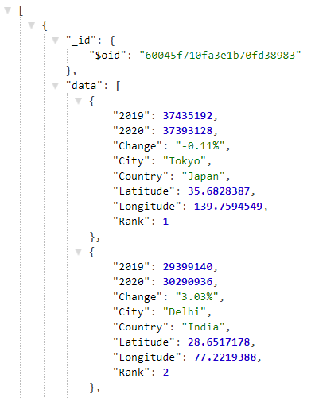
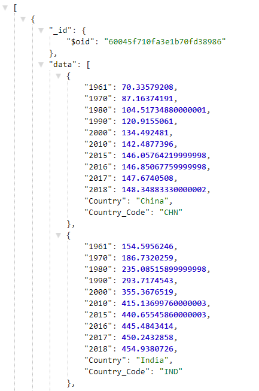
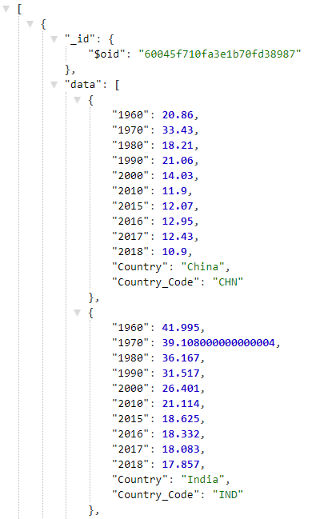
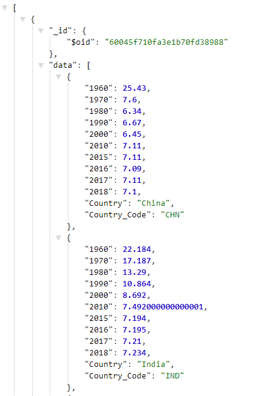
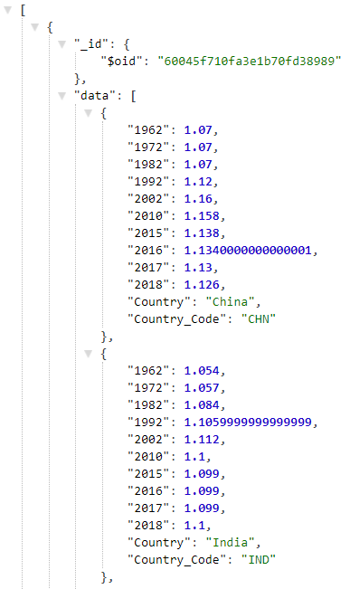

World population dataset API Documentation
Endpoints
-
World Population Actuals and Projections
Route: /api/population/world
Returns the World population data.
Example Output

- Population by Country
-
Population by City
Route: /api/population/cities
Returns the population of cities in 2019 and 2020.
Example Output
 -
Population Density
Route: /api/population/density
Returns the population density data.
Example Output
 -
Birth Rate
Route: /api/population/birth
Returns the birth rate of countries.
Example Output
 -
Death Rate
Route: /api/population/death
Returns the death rate of countries.
Example Output
 -
Male to Female Ratio
Route: /api/population/sex-ratio
Returns the sex ratio of countries.
Example Output

Route: /api/population/countries
Returns the population of countries in the years 2019 to 2015 and 2010, 2000, 1990.